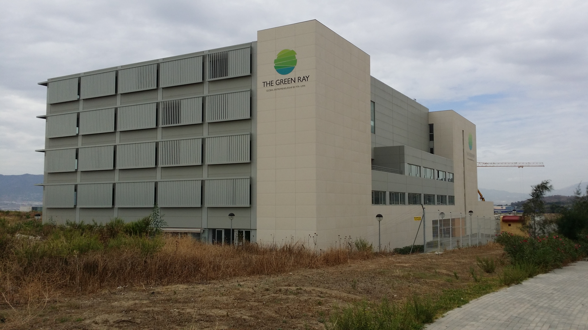
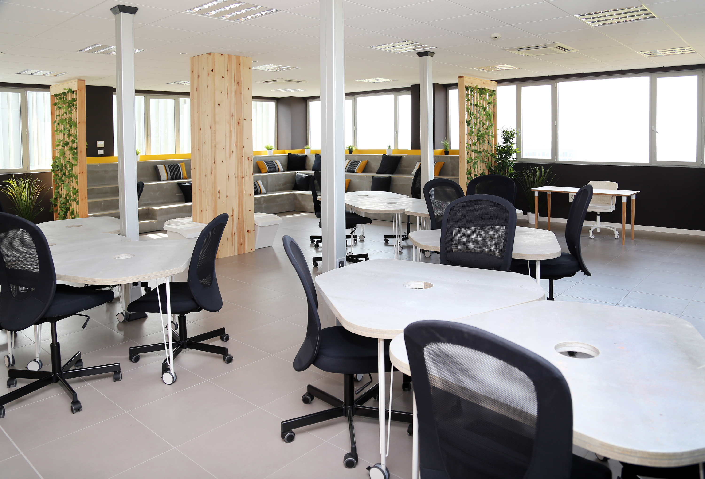
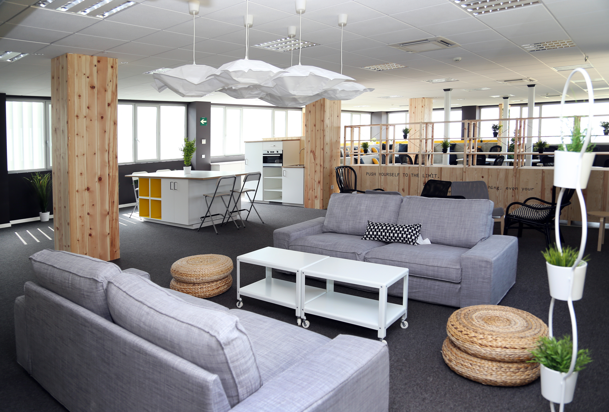

HAMR@ISMIR2015 Venue
HAMR@ISMIR 2015 will provide a space for individuals from various institutions, backgrounds, and experience levels to test out novel ideas as opposed to finishing a polished project and paper. As the name suggests, this iteration of HAMR will be held in conjunction with the the 16th International Society for Music Information Retrieval Conference in hopes of fostering intercollegiate collaborations between conference attendees. HAMR@ISMIR 2015 will be held at the University of Malaga immediately before ISMIR on October 24th-25th, 2015.
You can register HERE
HAMR@ISMIR 2015 Schedule will be as follows:
Saturday, October 24th 9:30 AM - Coffee 10:00 AM - Introductory remarks, project pitches 10:30 AM - Hacking begins 1:00 PM - Tutorials, lunch served 6:00 PM - Hacking ends for the night (officially, at least) Sunday, October 25th 9:30 AM - Coffee. Hacking restarts 12:15 PM - Lunch served 5:00 PM - Hacking ends, presentations begin 6:00 PM - Prizes awarded, HAMR ends, drinks nearby
The venue for HAMR@ISMIR 2015 will be the The Green Ray building of the Universidad de Málaga
  How to get there
You can reach very easily the The Green Ray by metro. It is located at the last stop called "Andalucia Tech" of the Red line L1
Click to access Metro Málaga.